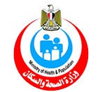

تواصل معنا
اشترك فى النشره البريديه
روابط هامه
وزارة الصحة والسكانالهيئة العامة للتأمين الصحىاللجنة القومية لمكافحة الفيروسات الكبديه

ابحث عن اقرب مركز مسح لمكان اقامتك
أكدت الدكتورة هالة زايد، وزيرة الصحة والسكان، أنه سيتم تدريب ما يقرب من 800 متدريب من مختلف المحافظات على آليات فحص المرضى للكشف عن فيرس سى والإصابة بالسكر
أكدت الدكتورة هالة زايد، وزيرة الصحة والسكان، أنه سيتم تدريب ما يقرب من 800 متدريب من مختلف المحافظات على آليات فحص المرضى للكشف عن فيرس سى والإصابة بالسكر
أكدت الدكتورة هالة زايد، وزيرة الصحة والسكان، أنه سيتم تدريب ما يقرب من 800 متدريب من مختلف المحافظات على آليات فحص المرضى للكشف عن فيرس سى والإصابة بالسكر
اشترك فى النشره البريديه
وزارة الصحة والسكانالهيئة العامة للتأمين الصحىاللجنة القومية لمكافحة الفيروسات الكبديه